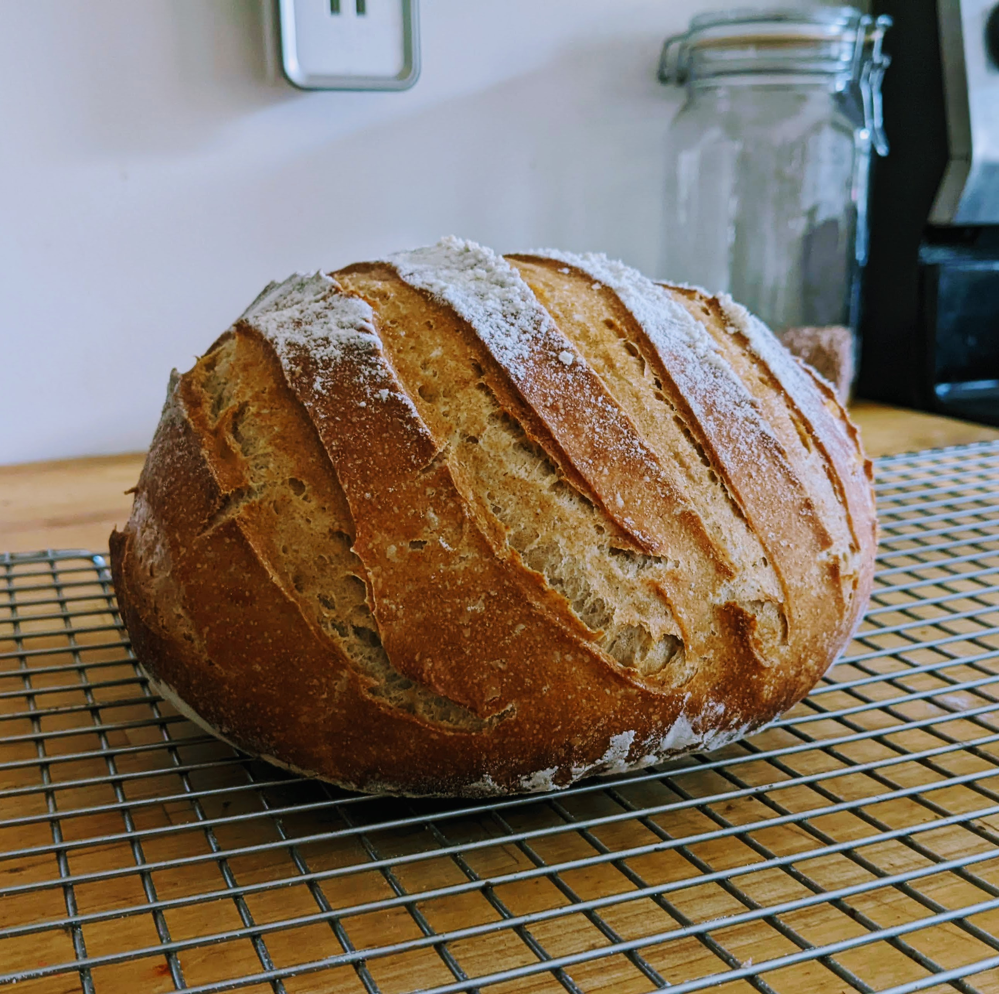

Rye Bread

Description
Baking bread takes patience, and from what I'm learning, shares some characteristics with coding. You have to understand your tools and how they interact, and you have to follow a process.
Rye bread gets a bad rap with many because of caraway seeds, which is a shame. Its earthy qualities don't need any supplementation with those seeds, so the following recipe offers an unadorned loaf that pairs well with soup, cheese, butter, and of course, beer.
Ingredients
- 1-3/4 T yeast or up to 1/2 c sourdough starter (preferred)
- 1 ale or lager, poured into a bowl and left to stand for an hour
- 1 c water (warm as the inside of your wrist)
- 1 T salt
- Rye flour, up to 6 c
- White flour or, up to 6 c
- Spelt flour, if available, up to 2 c
- Cast iron skillet
- Parchement paper
Steps
- In a large mixing bowl, mix the yeast and the cup of water with 1-2 T of white flour. Whisk thoroughly. If using sourdough culture, substitute it for the yeast and follow the same steps.
- Let the yeast/culture mixture bubble. Yeast will take approximately 10-15 min whereas sourdough might take an hour.
- When bubbly, whisk in the beer. Mix thoroughly.
- Using a mixer, add in flour by the 1/2 cup, in the following order: white - rye -spelt.
- When you've added approx 4 cups total flour, mix the dough on a medium speed. Watch for how it interacts with the sides of the bowl. Your goal is to continue adding just enough flour until your dough begins to pull away cleanly from the sides.
- When you've completed adding flour (it may be that you've added six to seven cups total), remove your dough from the bowl and knead by hand for a few minutes, shaping it into a ball at the end.
- Return the dough to the bowl and cover it with a towl, allowing it to rise until doubled in volume (1-3 hours, depending on temperature).
- Punch down your dough and knead for a few minutes to expel all gases. Shape into a round and place the loaf in your cast iron skillet, which you will have already lined with parchment paper. Sprinkle a small amount of white flour on your loaf.
- Allow the loaf to rise approximately 45 min - 1 hr. In the meantime, preheat your oven to 350 degrees F.
- When your loaf has had its second rise, score the top to allow for rising in the oven.
- Your bread is finished when it has browned in the oven and it sounds hollow when tapped. Budget 35-45 min, and don't hesitate to use the toothpick test - it should come out clean after a test insertion into the deepest part of the loaf.
- Cool on a rack and enjoy!